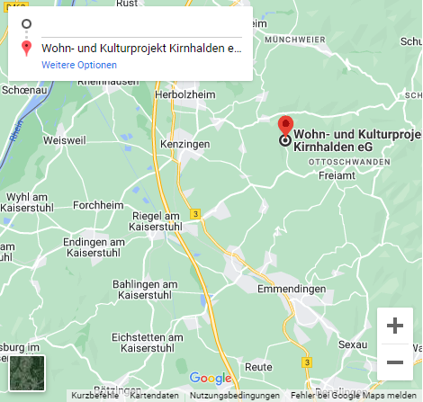

"Mehr Energie. Mehr Transformation. Mehr du!"
Der Alltag ist zu stressig? DEIN Leben fühlt sich hohl an?
Super! Denn das sind die perfekten Vorraussetzungen, um DICH tief in das Unterbewusstsein DEINer inneren Realitätärätätä vorzutanzen. Vergiss für zwei Tage und zwei Nächte all DEINe ungebügelten Kleidchen und denke ausschließlich an das enorme Potenzial, das in DIR schlummert.
Denn Du allein bist, was DU brauchst, um die Menschen um DICH herum glücklich zu machen!
Um voll und ganz zu fusionieren und DEINEM inneren Kraftkäse zu aktivieren, solltest DU vorab noch alle Infos sorgfältig lesen. Das könnte wichtig werden. Vielleicht findest Du sonst nie wieder zurück aus der Realitätärätätä...
"Höre auf deine äußere Stimme! Folge ihrem Rat!"
!!! Aufgepasst !!!
Die Festivallocation ist durch die Tallage flachenmäßig limitiert. Es wird deshalb dieses Jahr KEINE Parkplätze für Vans oder PKW geben. Deshalb heißt es: Camping as fuck, baby!
Komm doch einfach per Bahn, Rad oder Shuttle. Das schaffst du!
Wir behalten die wenigen Parkplätze vor Ort den Orga-Crews sowie Menschen mit entsprechenden Bedürfnissen vor. Falls du aus guten Gründen auf dein Auto oder einen Camper angewiesen bist und ohne deine Base nicht an dem Festival teilnehmen könntest, schreib uns bitte frühzeitig an!
Außerdem: Bitte parkt unter keinen Umständen auf den Waldwegen oder am Straßenrand im Kirntal, da bekommen wir richtig miesen Stress mit der Gemeinde! Fahrzeuge, die Piraten-Parken auf nicht ausgewiesen Flächen praktizieren, werden von Wildschweinen ins Dickicht gezerrt. Und außerdem ist das nicht gut für dein Karma. Just saying...
"Triff einfach die richtigen Entscheidungen. Vermeide falsche Entscheidungen!"

Die Realitätärätätä befindet auf dem Gelände des Wohn- und Kulturprojekts Kirnhalden und wird von dem gemeinnützigen Verein "Kulturkiste Kirnhalden" gehostet. Alles also fein unkomerziell und einfach, weil es Menschen gibt, die Bock drauf haben! Die Floors werden von SAU GEILEN Kollektiven aus der freiburger+ Partybubble aufgebaut und bespielt. So entsteht eine fluffige Fusion verschiedener Kollektive, der Orga-Crew vor Ort und Ihnen, sehr geehrte Hamen und Derren! Alle sollen hier eine gute Zeit haben können, deshalb seid ihr genauso gefragt, wie die über 100 kreativen Köpfe, die diese mind-blowing Experience seit Monaten organisiert haben! Das heißt vor allem: *Jegliche nervige Diskriminierungs-Scheiße wie Sexismus, Rassismus, Faschismus, Queerfeindlichkeit und Ableismus haben auf dem Gelände nix verloren! Falls sie sich doch auf dem Festival rumtreibt wird sie von uns ohne Diskussion aus dem Kirntal befördert! Punkt. *Bitte geht liebevoll miteinander UND mit dem Ort, an dem ihr euch befindet, um. Vergesst nicht, dass Kirnhalden auch das Zuhause von vielen Menschen ist. Das Wohn- und Kulturprojekt steckt unfassbar viel Mühe und Input in die Pflege und Verwaltung der Gebäude und das Gelände. Bitte respektiert diese Privatsphäre entsprechend! *Drogen?
Auf drei Floors wird es auch diese Jahr wieder viel wummernden elektronischen Sound in verschiedenen Nuancen geben. Außerdem gibt es eine fette Live Bühne mit grandiosen Artist, die ihr hier mit Sicherheit noch nie erlebt habt. Ein paar Tage vor dem Festival stellen wir euch hier das Lineup online. Screenshot empfehlenswert! Dann wisst ihr ganz genau, wann ihr wo richtig seid. Ob beim traditionellen Lindy Hop Workshop mit anschließendem Swing-Set, bei nem deftigen Techno-Geballer im Pavillon oder Outdoor bei live Fem-Traaaaaaaap! Und weil Highperforming bei uns großgeschrieben wird, gibt es selbstverständlich noch ein paar kleine hidden Floors und Knutsch-Ecken. Aber das ist next Level experience. Schau einfach, was dein Herz in diesem Moment sagt und lass dich von deinem Inneren Bass leiten... Unsere Floors spielen nachts bis 4:44 Uhr. Danach dürfen die Füchse und Hühner schlafen. Um dann am nächsten Tag wieder weiter zu feiern, gemütlich in der Sonne zu liegen oder selbst auf die Open Stage zu hüpfen?
Natürlich gilt es, sich besonders heraus zu putzen, um nicht nur innerlich sondern auch äußerlich zu leuchten. Wirf dich dabei bitte in deine treuesten Schrankschätze: Kleidung, die du schon besitzt und für die du nie den passenden Anlass findest. Wir wollen sie, genau so ehrlich wie dich! Egal ob Brautkleid deiner Mutter oder der erste Badeanzug mit dem Seepferdchen Abzeichen. Führe sie aus! Dresscode findet in den Nächten seine Höhepunkte, darf aber auch tagsüber ausgelebt werden und falls das gar nicht dein Ding ist, dann tue einfach so, als sei dein Outfit was Besonders. Hauptsache, du bist die beste Version deiner Selbst.
Nachdem du hoffentlich dein morgendliches 5-Minuten-Journaling bezüglich deiner Darm-Flora, dein Matcha-Haarspitzen-Treatment sowie deine Aszendenten-Mediation durchgeführt hast, kannst du dich zu einer der vielen Tagsüber-Aktivitäten dazu gesellen. In den Wäldern um Kirnhalden lässt es sich hervorragend flanieren, im Innenhof Kaffee oral oder direkt intervenös einnehmen oder du gehst straight wieder auf den Outdoor Floor oder zur Live-Stage. Wer mehr möchte kann morgens beim Yoga mitmachen (ohne Ironie!), im Zirkuszelte Workshops besuchen oder einfach selbst was Kleines initiieren. Das Programm für die Workshops findest du kurz vor dem Festival hier oder vor Ort auf dem Shedul. Awaken your inner self!
500 Meter von den Floors entfernt gibt es eine große Wiese für dein to-go-Zuhause. Bitte rückt eng zusammen, dann ist auch Platz für alle. Auf der Wiese stehen ein paar Kompostklos und Handwasch-Stationen, bitte liebevoll befüllen und daran denken, dass das der Hotspot für Krankheiten ist. Es gibt übrigens keine Duschen auf dem Gelände, also frisch kommen und dreckig gehen, baby! Wir können leider keinerlei Spontan-Schlafplätze in den Gebäuden oder Kram, wie Decken oder Matratzen, zur Verfügung stellen. Sorgt bitte gut für euch, wir sind im Outback, gell. Hier wird es nachts im Juni auch noch Mal ordentlich kalt und feucht werden. Und bei Regen.... Joa, dann wird's wild. Ah, und noch was: Bitte kein offenes Feuer auf der Campingwiese machen!
Knurrende Mägen sind nix für schöne Dancefloors, das stört die Akustik... Deshalb füllt sie doch mit was Feinem von den Essensständen. Es gibt Pizza, Pommes und feines von Aubergenie! Morgens gibt es außerdem frische Backwaren auf die Hand und knackiges Obst für den personal Glow. Bringt als Back-up bitte noch Vesperzeug mit, es gibt im Umkreis von 9 Kilometern keine Läden! Für Bier, Limos, Schorle und Sekt ist an den Bars gesorgt. Alles zu liebevollen Preisen, also kauft gerne an den lokalen Bars. Investiere, du wirst es nicht bereuen! Tatsächlich haben wir auch den Sekko Sociale da, ihr supportet also nicht nur euer neues Lieblingsfestival sondern auch ein sinnvolles Aufsteiger*innen Programm für Menschen, die rechts falsch abgebogen waren... Leitungswasser gibt es kostenfrei an den gekennzeichneten Auffüllstationen.
Auf dem Festival gibt es ein erfahrenes Awareness-Team, einen Awareness-Raum, Erste-Hilfe- Sets und einen Info-Stand. Bitte nutze diese Angebote, wenn du sie brauchst: Du darfst dich jederzeit an die Menschen in lila Warnweste (Awareness), die Hauptorga (Haikappi) oder den Infostand wenden!
Falls du vorab noch Infos brauchst, um dein Ticket buchen zu können, dann schreib uns gerne direkt an!
Zwei der drei großen Floors, die Live-Bühne, die Toiletten und der Innenhof sind barrierefrei und z.B. mit Rolli gut zu erreichen. Allerdings können wir die Barrierefreiheit nicht auf dem gesamten Gelände sicherstellen. Auf Nachfrage stellen wir gerne einen gut zu erreichenden Stellplatz für deine PKW oder Camper bereit. Schreib uns diesbezüglich aber frühzeitig an! Auch beantworten wir dir gerne alle weiteren Fragen zu Barrieren und versuchen deinen Bedürfnisse durch Beeinträchtigungen oder Neurodiversitäten gerecht zu werden. Wir wollen es gerne möglich machen, dass du kommen kannst. Lass uns zusammen schauen, wie es umsetzbar ist!
Auch wenn Axolotl die exzellentesten Freunde sind: Die Realitätärätätä wird kein kind- und tiergerechter Ort sein. Falls es sich für euch nicht anders organisieren lässt, tragt ihr während der Veranstaltung die alleinige Verantwortung für das Wohlbefinden der Kleinen. Wir erschaffen keine expliziten Räume oder Programmpunkte für Kinder, außerdem gibt es einen ungeschützten Bachlauf und andere Gefahrenstellen auf dem Gelände. Hunde sind bitte an der Leine zu führen. Hundekot unbedingt einsammeln, thanks! Und weil wir es selbst blöde finden, dass hier nicht alle zusammen feiern werden, gibt es 2027 dann statt der Realitätärätätä wieder das familienfreundliche Kultursommerfest in Kirnhalden!
Im Kirntal ist der Handyempfang bescheiden bis gar nicht vorhanden. Es gibt ein offenes W-Lan, bitte aber nur wenn unbedingt notwendig nutzen, ist sonst sofort überlastet und schluckt Kapazitäten, die wir auch für Orga benötigen. Deshalb: Line-Ups und Maps vorab screenshooten :) Für Notfälle gibt es einen Festnetzanschluss!
Nur mit Ticket wird es Realitätärätätä! Soll heißen, dass es keine Abendkasse gibt und auch ansonsten die traurige Botschaft lautet: Für dieses Jahr sind alle Tickets vergeben! Außer du lebst frei nach dem Motto: Be a hero, be a Abbauer*in! Da erhältst du, außer Schlafmangel und viel Anerkennung, noch eines der letzten UND zudem kostenfreie Eintritt in die Realitätärätätä. Du hast noch kein Shuttle-Ticket? Dann hopp hopp, JETZT ZUGREIFEN! Denn auch hier gilt: Kein Ticket, kein Platz im Bus, kein super bequemes Anreisen! Shuttletickets Link Abbauticket Link
"Shift happens – bist du bereit?""
So findest du uns
